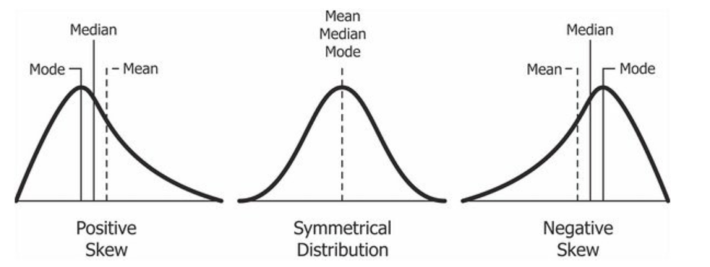

Descriptive statistics enable researchers to quickly and easily examine the “behavior” of their datasets, identifying potential errors and allowing them to observe particular trends that may be worth further analysis. Here, we will cover how to calculate descriptive statistics for multiple different datasets, culminating in an assignment covering these topics.
2.2 Preparing R
As with every week, we will need to load our relevant packages first. This week, we are using the following:
── Conflicts ────────────────────────────────────────── tidyverse_conflicts() ──
✖ dplyr::filter() masks stats::filter()
✖ dplyr::lag() masks stats::lag()
✖ readr::parse_date() masks curl::parse_date()
ℹ Use the conflicted package (<http://conflicted.r-lib.org/>) to force all conflicts to become errors
2.3 Downloading the data
For the example this week, we will be using the starbucks dataset, describing the number of drinks purchased during particular time periods during the day.
Rows: 9 Columns: 2
── Column specification ────────────────────────────────────────────────────────
Delimiter: ","
chr (1): Hour
dbl (1): Frap_Num
ℹ Use `spec()` to retrieve the full column specification for this data.
ℹ Specify the column types or set `show_col_types = FALSE` to quiet this message.
2.4 Descriptive statistics
Descriptive statistics are statistics that help us understand the shape and nature of the data on hand. These include really common metrics such as mean, median, and mode, as well as more nuanced metrics like quartiles that help us understand if there is any skew in the dataset. (Skew refers to a bias in the data, where more data points lie on one side of the distribution and there is a long tail of data in the other direction).

Examples of skew compared to a symmetrical, non-skewed distribution. Source: machinelearningparatodos.com
Note above that the relative position of the mean, median, and mode can be indicative of skew. Please also note that these values will rarely be exactly equal “in the real world”, and thus you need to weigh differences against the entire dataset when assessing skew. There is a lot of nuance like this in statistics; it is not always an “exact” science, but sometimes involves judgment calls and assessments based on what you observe in the data.
Using the starbucks dataset, we can look at some of these descriptive statistics to understand what is going on.
2.4.1 Notation
As a quick reminder, we use Greek lettering for populations and Roman lettering for samples. For example:
\(\sigma\) is a population, but \(s\) is a sample (both these variables refer to standard deviation).
\(\mu\) is a population, but \(\bar{x}\) is a sample (both of these variables refer to the mean).
2.4.2 Mean
The mean is the “average” value within a set of data, specifically, the sum of all values divided by the length of those values: \(\frac{\sum_{i=1}^nx}{n}\).
Here, we are specifically interested in the number of frappuccinos.
# get vector of frappuccino numberfraps <- starbucks$Frap_Num# get mean of vectormean(fraps)
[1] 6.222222
Note that the above should be rounded to a whole number, since we were given the data in whole numbers!
mean(fraps) %>%round(0)
[1] 6
We already covered calculating the average manually in our previous tutorial, but we can do that here as well:
# sum values# divide by n, length of vector# round to 0 placesround(sum(fraps)/length(fraps),0)
[1] 6
2.4.3 Range
The range is the difference between the largest and smallest units in a dataset. We can use the commands min and max to calculate this.
max(fraps) -min(fraps)
[1] 13
The range of our dataset is 13.
2.4.4 Median
The median is also known as the 50th percentile, and is the midpoint of the data when ordered from least to greatest. If there are an even number of data points, then it is the average point between the two center points. For odd data, this is the \(\frac{n+1}{2}\)th observation. For even data, since we need to take an average, this is the \(\frac{\frac{n}{2}+(\frac{n}{2}+1)}{2}\). You should be able to do these by hand and by using a program.
median(fraps)
[1] 4
Now, to calculate by hand:
length(fraps)
[1] 9
We have an odd length.
# order gets the orderorder(fraps)
[1] 1 3 7 2 4 6 5 9 8
# [] tells R which elements to put wherefrap_order <- fraps[order(fraps)]frap_order
[1] 2 2 2 3 4 7 8 13 15
# always use parentheses# make sure the math maths right!(length(frap_order)+1)/2
[1] 5
Which is the fifth element in the vector?
frap_order[5]
[1] 4
Now let’s try it for an even numbers.
# remove first elementeven_fraps <- fraps[-1]even_fraps_order <- even_fraps[order(even_fraps)]even_fraps_order
[1] 2 2 3 4 7 8 13 15
median(even_fraps)
[1] 5.5
Now, by hand: \(\frac{\frac{n}{2}+(\frac{n}{2}+1)}{2}\).
n <-length(even_fraps_order)# get n/2 position from vectorm1 <- even_fraps_order[n/2]# get n/2+1 positionm2 <- even_fraps_order[(n/2)+1]# add these values, divide by two for "midpoint"med <- (m1+m2)/2med
[1] 5.5
As we can see, these values are equal!
2.4.5 Other quartiles and quantiles
We also use the 25th percentile and the 75th percentile to understand data distributions. These are calculated similar to the above, but the bottom quartile is only \(\frac{1}{4}\) of the way between values and the 75th quartile is \(\frac{3}{4}\) of the way between values. We can use the R function quantile to calculate these.
quantile(frap_order)
0% 25% 50% 75% 100%
2 2 4 8 15
We can specify a quantile as well:
quantile(frap_order, 0.75)
75%
8
We can also calculate these metrics by hand. Let’s do it for the even dataset, since this is more difficult.
quantile(even_fraps_order)
0% 25% 50% 75% 100%
2.00 2.75 5.50 9.25 15.00
Note that the 25th and 75th percentiles are also between two different values. These can be calculated as a quarter and three-quarters of the way between their respective values.
# 75th percentilen <-length(even_fraps_order)# get positionp <-0.75*(n+1)# get lower value# round downm1 <- even_fraps_order[trunc(p)]# get upper value# round upm2 <- even_fraps_order[ceiling(p)]# position between# fractional portion of rankfrac <- p-trunc(p)# calculate the offset from lowest valueval <- (m2 - m1)*frac# get valuem1 + val
[1] 11.75
Wait… why does our value differ?
R, by default, calculates quantiles using what is called Type 7, in which the quantiles are calculated by \(p_k = \frac{k-1}{n-1}\), where \(n\) is the length of the vector and \(k\) refers to the quantile being used. However, in our book and in this class, we use Type 6 interpretation - \(p_k = \frac{k}{n + 1}\). Let’s try using Type 6:
quantile(even_fraps_order, type =6)
0% 25% 50% 75% 100%
2.00 2.25 5.50 11.75 15.00
Now we have the same answer as we calculated by hand!
This is a classic example of how things in R (and in statistics in general!) can depend on interpretation and are not always “hard and fast” rules.
In this class, we will be using Type 6 interpretation for the quantiles - you will have to specify this in the quantile function EVERY TIME! If you do not specify Type 6, you will get the questions incorrect and you will get answers that do not agree with the book, with Excel, or what you calculate by hand.
2.4.6 Mode
There is no default method for finding the mode in R. However, websites like Statology provide wraparound functions.
# Statology function# define function to calculate modefind_mode <-function(x) {# get unique values from vector u <-unique(x)# count number of occurrences for each value tab <-tabulate(match(x, u))# return the value with the highest count u[tab ==max(tab)]}find_mode(fraps)
[1] 2
We can also do this by hand, by counting the number of occurrences of each value. This can be done in a stepwise fashion using commands in the above function.
# unique countsu <-unique(fraps)u
[1] 2 3 4 8 7 15 13
# which elements matchmatch(fraps,u)
[1] 1 2 1 3 4 5 1 6 7
# count themtab <-match(fraps,u) %>%tabulate()tab
[1] 3 1 1 1 1 1 1
Get the highest value.
u[tab==max(tab)]
[1] 2
Notice this uses ==. This is a logical argument that means “is equal to” or “is the same as”. For example:
2==2
[1] TRUE
These values are the same, so TRUE is returned.
2==3
[1] FALSE
These values are unequal, so FALSE is returned. R will read TRUE as 1 and FALSE as ZERO, such that:
sum(2==2)
[1] 1
and
sum(2==3)
[1] 0
This allows you to find how many arguments match your condition quickly, and even allows you to subset based on these indices as well. Keep in mind you can use greater than <, less than >, greater than or equal to <=, less than or equal to >=, is equal to ==, and is not equal to != to identify numerical relationships. Other logical arguments include:
&: both conditions must be TRUE to match (e.g., c(10,20) & c(20,10)). Try the following as well: fraps < 10 & fraps > 3.
&&: and, but works with single elements and allows for better parsing. Often used with if. E.g., fraps < 10 && fraps > 3. This will not work on our multi-element frap vector.
|: or, saying at least one condition must be true. Try: fraps > 10 | fraps < 3.
||: or, but for a single element, like && above.
!: not, so “not equal to” would be !=.
2.4.7 Variance
When we are dealing with datasets, the variance is a measure of the total spread of the data. The variance is calculated using the following:\[\sigma^2=\frac{\sum (x_i-\bar{x})^2}{n-1}\]
Essentially, this means that for every value of \(x\), we are finding the difference between that value and the mean and squaring it, summing all of these quared differences, and dividing them by the number of samples in the dataset minus one. Let’s do this for the frappuccino dataset.
Now we have the squared differences. We need to sum these and divide by \(n-1\).
n <-length(frap_order)var_frap <-sum(diffs_sq)/(n-1)var_frap
[1] 24.44444
Let’s check this against the built-in variance function in R.
var(frap_order)
[1] 24.44444
They are identical! We can check this using a logical argument.
var_frap ==var(frap_order)
[1] TRUE
Seeing as this is TRUE, we calculated it correctly.
2.4.8 Standard deviation
Another common measurement of spread is the standard deviation (\(\sigma\)). As you remember from class (or may have guessed from the notation on this site), the standard deviation is just the square root of the variance.
sqrt(var_frap)
[1] 4.944132
We can test this against the built in sd function in R:
sqrt(var_frap) ==sd(frap_order)
[1] TRUE
As you can see, we calculated this correctly!
2.4.9 Standard error
The standard error is used to help understand the spread of data and to help estimate the accuracy of our measurements for things like the mean. The standard error is calculated thusly:
\[
SE = \frac{\sigma}{\sqrt{n}}
\]
There is not built in function for the standard error in excel, but we can write our own:
se <-function(x){ n <-length(x) # calculate n s <-sd(x) # calculate standard deviation se_val <- s/sqrt(n)return(se_val)}
Let’s test this code.
se(frap_order)
[1] 1.648044
Our code works! And we can see exactly how the standard error is calculate. We can also adjust this code as needed for different situations, like samples.
Remember, the standard error is used to help reflect our confidence in a specific measurement (e.g., how certain we are of the mean, and what values we believe the mean falls between). We want our estimates to be as precise as possible with as little uncertainty as possible. Given this, does having more samples make our estimates more or less confident? Mathematically, what happens as our sample size increases?
2.4.10 Coefficient of variation
The coefficient of variation, another measure of data spread and location, is calculated by the following:
\[
CV = \frac{\sigma}{\mu}
\]
We can write a function to calculate this in R as well.
cv <-function(x){ sigma <-sd(x) mu <-mean(x) val <- sigma/mureturn(val)}cv(frap_order)
[1] 0.7945927
Remember that we will need to round values.
2.4.11 Outliers
Outliers are any values that are outside of the 1.5 times the interquartile range. We can calculate this for our example dataset as follows:
lowquant <-quantile(frap_order,0.25,type =6) %>%as.numeric()hiquant <-quantile(frap_order,0.75,type =6) %>%as.numeric()iqr <- hiquant - lowquantlowbound <-mean(frap_order) - (1.5*iqr)hibound <-mean(frap_order) + (1.5*iqr)# low outliers?# select elements that match# identify using logical "which"frap_order[which(frap_order < lowbound)]
numeric(0)
# high outliers?# select elements that match# identify using logical "which"frap_order[which(frap_order > hibound)]
numeric(0)
We have no outliers for this particular dataset.
2.5 Homework: Chapter 4
Now that we’ve covered these basic statistics, it’s your turn! For this week, you will be completing homework based off of Chapter 4 in your book.
2.5.1 Homework instructions
Please create an RMarkdown document that will render as an .html file. You will submit this file to show your coding and your work. Please refer to the Introduction to R for refreshers on how to create an .html document in RMarkdown. You will need to do the following for each of these datasets:
mean
median
range
interquartile range
variance
standard deviation
coefficient of variation
standard error
whether there are any “outliers”
Please show all of your work for full credit.
2.5.2 Data for homework problems
Please use the following datasets for your homework.
2.5.2.1 Problem 4.1
x <-c(2,5,3,7,8,3,9,3,10,4,7,4,6,11,9,9,11,5,7,3,8,9,2,1,3,8,3,8,9,3)
2.5.2.2 Problem 4.2
Dataset on culmen (top of bill) lengths in Belted Kingfishers Megaceryle alcyon.
Belted Kingfisher Megaceryle alcyon. Larry Jordan / flickr.com, Creative Commons